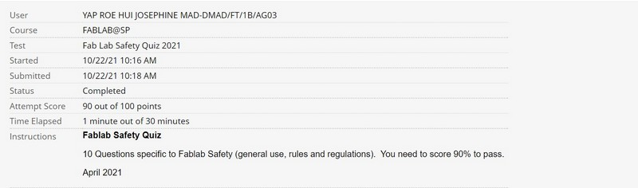

We went through how to stay safe in FabLab. We need to make sure that when we are handling heavy machinery, we are trained and know how to operate it properly so as to not cause injury. Knowing how to stay safe in FabLab enables us to create an efficient, productive and safe environment for us to work in. We also learnt what to do during an emergency like needing first aid, what kind of accidents can happen in FabLab, how to evacuate and how to react during emergencies.
We were informed of what type of attire was suitable for FabLab and how to read Safety Warning Placards which is important because it tells us the risks of each piece of machinery.
Good housekeeping is also important in FabLab. For Example,returning tools back to their designated positions, keeping the workplace neat, clearing debris and chips off the machines and workbenches as well as bringing leftover or unused materials to the recycle area.
We also took a FabLab Safety Quiz to make sure that we understood the rules and regulations as well as how to stay safe. We had to pass with a score of at least 90 out of 100 points.
These are the results from my FabLab Safety Quiz